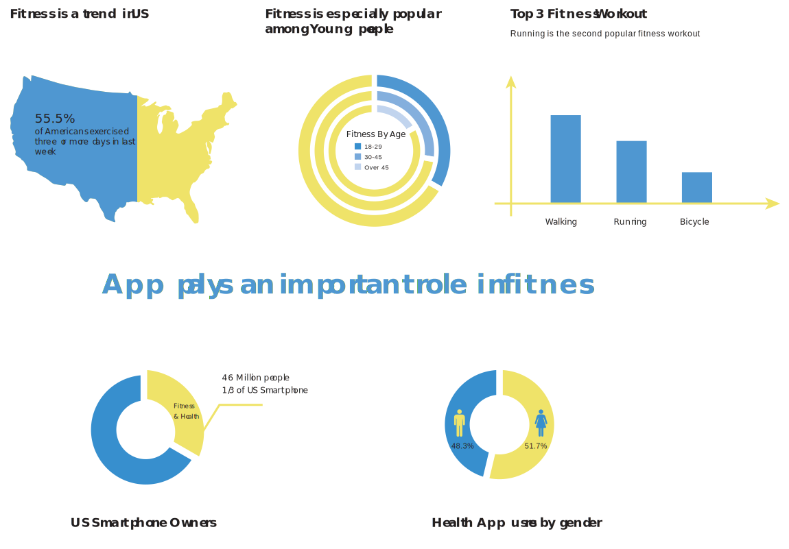
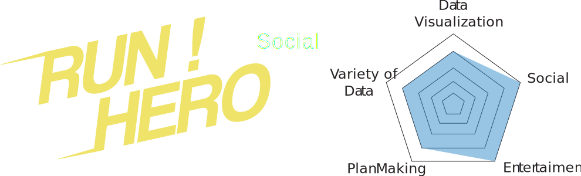

I'm a runner as well as a gamer. From my personal experience on both area, running is pretty much same as gaming. Both activities need you to overcome several challenges. The runner need to learn how to control the breathe and the paces appropriately, in order to over come the tiredness and the sour from leg to run. While gamers need to be familiar with the game mechanics as much as possible to defeat the monsters to sae the princess. From this similarity between running and gaming. I would like to explore the possibility of applying gamification in run track application to make run training process more like a gaming experience.
Most users of running app consider run tracking app as a tool to record and display their running procedure. Well some of them also care about the if it can integrate with the music well and display the data creatively. However, I think there is something missing...
I think running app should be able to play a more important role for the user. I want it can not only provide professional training plan and data for the users, but also give users motivation, help them find the person who have same interest in running and become the platform to perform offline events. It should NOT JUST BE A TOOL.
